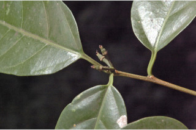
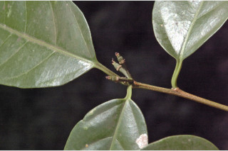
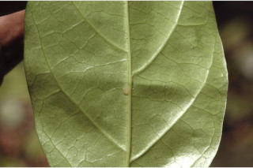
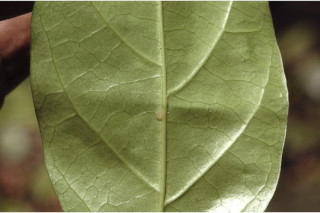

Trees up to 5 m tall.
5 ಮೀ. ಎತ್ತರದವರೆಗೆ ಬೆಳೆಯುವ ಮರಗಳು.
5 മീറ്റര് വരെ ഉയരമുളള മരങ്ങള്.
மரங்கள் 5 மீ. உயரம் வரை வளரக்கூடியது.
Bark greyish, usually smooth.
ತೊಗಟೆ ಬೂದು ಬಣ್ಣದಲ್ಲಿದ್ದು ಸಾಮಾನ್ಯವಾಗಿ ನಯವಾಗಿರುತ್ತದೆ.
സാധാരണയായി മിനുസമാര്ന്ന, ചാര നിറത്തിലുളള പുറംതൊലി.
மரத்தின் பட்டை சாம்பல் நிறமானது, பொதுவாக வழுவழுப்பானது.
Branchlets terete, subterete with plenty of lenticels, glabrous, canaliculate.
ಕಿರುಕೊಂಬೆಗಳು ದುಂಡಾಕಾರ,ಉಪ- ದುಂಡಾಕಾರದಲ್ಲಿದ್ದು ಹೆಚ್ಚಿನ ಸಂಖ್ಯೆಯಲ್ಲಿನ ವಾಯುವಿನಿಮಯ ಬೆಂಡು ರಂಧ್ರಗಳ ಸಮೇತವಿರುತ್ತವೆ ಹಾಗೂ ರೋಮರಹಿತವಾಗಿರುತ್ತವೆ ಮತ್ತು ಕಾಲುವೆ ಗೆರೆಗಳನ್ನು ಹೊಂದಿರುತ್ತವೆ .
ധാരാളം ശ്വസനരന്ധ്രങ്ങളുളള, ചാലുളളതും, അരോമിലവുമായ, ഉരുണ്ടതോ ഏതാണ്ട് ഉരുണ്ടിരിക്കുന്നതോ ആയ ഉപശാഖകള്.
சிறிய நுனிக்கிளைகள் குறுக்குவெட்டுத் தோற்றத்தில் வளையமானது, லெண்டிசெல் உடையது, உரோமங்களற்றது.
Whitish sap from the cut end of leaves and twigs.
ಕತ್ತರಿಸಿದಾಗ ಎಲೆಗಳು ಮತ್ತು ಕುಡಿಕೊಂಬೆಗಳ ತುದಿಯಿಂದ ಬೆಳ್ಳಗಿನ ಸಸ್ಯ ರಸ ಒಸರುತ್ತವೆ
തണ്ടിന്റെയും ഇലയുടേയും മുറിവില്ക്കൂടി വെളുത്ത സ്രവം പുറത്തു വരുന്നു.
இலையின் வெட்டிய பகுதியில் மற்றும் தண்டின் உடைந்த பகுதியில் வெண்மை நிறமான திரவத்தை சுரக்ககூடியது.
Leaves simple, alternate or subopposite, spiral; stipules caducous; petiole 0.5-1.5 cm long, glabrous, canaliculate; lamina 6-19 x 2.5-8 cm, variable in shape from narrow elliptic to ovate, apex bluntly acute to acuminate, base asymmetric or rounded to acute, margin entire, chartaceous, glabrous; midrib flat above; secondary_nerves 5-8 pairs, lowest pair opposite and acute in angle; tertiary_nerves broadly reticulo-percurrent.
ಎಲೆಗಳು ಸರಳವಾಗಿದ್ದು,ಪರ್ಯಾಯ ಅಥವಾ ಉಪ-ಅಭಿಮುಖಿಗಳಾಗಿದ್ದು ಸುತ್ತು ಜೋಡನಾ ವ್ಯವಸ್ಥೆಯಲ್ಲಿರುತ್ತವೆ;ಕಾವಿನೆಲೆಗಳು ಉದುರಿಹೋಗುವಂತವು;ತೊಟ್ಟುಗಳು 0.5 – 1.5 ಸೆಂ.ಮೀ. ವರೆಗಿನ ಉದ್ದವಿದ್ದು ಕಾಲುವೆಗೆರೆ ಸಮೇತವಿರುತ್ತವೆ ಹಾಗೂ ರೋಮರಹಿತವಾಗಿರುತ್ತವೆ; ಪತ್ರಗಳು 6 -19 X 2.5 – 8 ಸೆಂ. ಮೀ. ಗಾತ್ರ, ಅಂಡವೃತ್ತ ದಿಂದ ಅಂಡಾಕಾರದಲ್ಲಿದ್ದು ಆಕಾರದಲ್ಲಿ ವೈವಿಧ್ಯತೆ ಹೊಂದಿರುತ್ತವೆ , ತುದಿ ಮೊಂಡುಚೂಪಿನಿಂದ ಕ್ರಮೇಣ ಚೂಪಾಗುವ ರೀತಿಯಲ್ಲಿರುತ್ತವೆ, ಬುಡ ಅಸಮ ರೂಪಿಯಾಗಿ ಅಥವಾ ದುಂಡಾಗಿರುವುದರಿಂದ ಚೂಪಾಗಿರುವ ಮಾದರಿಯಲ್ಲಿರುತ್ತದೆ, ಅಂಚು ನಯವಾಗಿರುತ್ತದೆ. ಮೇಲ್ಮೈಕಾಗದವನ್ನೋಲುವ ರೀತಿಯಲ್ಲಿದ್ದು ರೋಮರಹಿತವಾಗಿರುತ್ತವೆ;ಮಧ್ಯನಾಳ ಪತ್ರದ ಮೇಲ್ಭಾಗದಲ್ಲಿ ಚಪ್ಪಟೆಯಾಗಿರುತ್ತದೆ; ಎರಡನೇ ದರ್ಜೆಯ ನಾಳಗಳು 5-8 ಜೋಡಿಗಳಿರುತ್ತವೆ, ಅತಿ ತಳಗಿನ ಜೋಡಿಗಳು ಅಭಿಮುಖಿಗಳಾಗಿರುತ್ತವೆ ಮತ್ತು ತೀಕ್ಷ್ಣವಾದ ಕೋನ ಹೊಂದಿರುತ್ತವೆ; ಮೂರನೇ ದರ್ಜೆಯ ನಾಳಗಳು ವಿಶಾಲ ಜಾಲಬಂಧ ನಾಳ ವಿನ್ಯಾಸ ಹೊಂದಿದ್ದು ಎಲೆ ದಿಂಡಿಗೆ ಅಡ್ಡವಾಗಿ ಕೂಡುವಂತವು.
ലഘുവായ ഇലകള്, ഏകാന്തരമായോ ഉപസമ്മുഖമായോ, സര്പ്പിളമായി ക്രമീകരിച്ചിരിക്കുന്നു; എളുപ്പം കൊഴിഞ്ഞു വീഴുന്ന അനുപര്ണ്ണങ്ങള്; ചാലുളള, അരോമിലമായ ഇലഞെട്ടിന് 0.5 സെ.മീ മുതല് 1.5 സെ.മീ വരെ നീളം; പത്രഫലകത്തിന് 6 സെ.മീ മുതല് 19 സെ.മീ വരെ നീളവും 2.5 സെ.മീ മുതല് 8 സെ.മീ വരെ വീതിയും, വീതികുറഞ്ഞ ദീര്ഘവൃത്തം തൊട്ട് അണ്ഡാകാരം വരെ, ആകൃതി പലവിധത്തിലാവാം, പത്രാഗ്രം മുനപ്പില്ലാത്ത നിശിതാഗ്രം മുതല് ദീര്ഘാഗ്രംവരെയാകാം, പത്രാധാരം അസമമോ വൃത്താകാരംതൊട്ട് നിശിതംവരെയാകാം, അരികുകള് അവിഭജിതമാണ്, കടലാസ് പോലത്തെ പ്രകൃതം, അരോമിലം; മുകളില് പരന്നിരിക്കുന്ന മുഖ്യസിര; കീഴറ്റത്തെ ജോഡി സമ്മുഖവും, നിശിതകോണിലുമുളള, 5 മുതല് 8 വരെ ജോഡി ദ്വിതീയ ഞരമ്പുകള്; വീതിയേറിയ ജാലിത-പെര്കറന്റ് വിധത്തിലുളള ത്രിതീയ ഞരമ്പുകള്.
இலைகள் தனித்தவை, மாற்றுஅடுக்கமானவை, அல்லது எதிரடுக்கம் போன்றவை, சுழல் போன்று அமைந்தவை; இலையடிச்செதில் எளிதில் உதிரக்கூடியது; இலைக்காம்பு 0.5-1.5 செ.மீ. நீளமானது, குறுக்குவெட்டுத் தோற்றத்தில் கேனாலிகுலேட், உரோமங்களற்றது; இலை அலகு 6-19 X 2.5-8 செ.மீ., உருவத்தில் மாறுபாடுகள் நிறைந்தது, குறுகிய நீள்வட்டம் முதல் முட்டை வடிவானது, அலகின் நுனியில் மொட்டையான முனையுடன் கூரியது முதல் அதிக்கூரியது, அலகின் தளம் சமமற்றது, அல்லது வட்டமானது முதல் கூரியது, அலகின் விளிம்பு முழுமையானது, சார்ட்டேசியஸ், கீழ்பரப்பு உரோமங்களற்றது; மையநரம்பு அலகின் மேற்பரப்பிற்கு சமமானது; இரண்டாம் நிலை நரம்புகள் 5-8 ஜோடிகள், தளத்திலுள்ள ஓர் ஜோடி நரம்புகள் எதிரானவை மற்றும் குறுகிய கோணமுடையவை; மூன்றாம் நிலை நரம்புகள் அகன்ற வலைப்பின்னல்-பெர்க்கரண்ட்.
Flowers unisexual, monoecious; male flowers in terminal slender racemes; female flowers few at the base of the male racemes.
ಹೂಗಳು ಏಕಲಿಂಗಿಗಳಾಗಿರುತ್ತವೆ ಮತ್ತು ಗಂಡು ಮತ್ತು ಹೆಣ್ಣು ಹೂಗಳು ಒಂದೇ ಸಸ್ಯದಲ್ಲಿರುತ್ತವೆ; ಗಂಡು ಹೂಗಳು ತುದಿಯಲ್ಲಿನ ತೆಳುವಾದ ಮಧ್ಯಾಭಿಸರ ಪುಷ್ಪಮಂಜರಿಯಲ್ಲಿರುತ್ತವೆ; ಹೆಣ್ಣು ಹೂಗಳು ಗಂಡು ಪುಷ್ಪ ಮಂಜರಿಯ ಬುಡ ಭಾಗದಲ್ಲಿದ್ದು ಕಡಿಮೆ ಸಂಖ್ಯೆಯಲ್ಲಿರುತ್ತವೆ.
പൂക്കള് ഏകലിംഗികളാണ്, മൊണീഷ്യസും; ആണ്പൂക്കള്, നേര്ത്ത കക്ഷീയ റസീമുകളിലുണ്ടാകുന്നു; പെണ്പൂക്കള്, കുറച്ചുമാത്രം എണ്ണം ആണ് റസീമുകളുടെ കീഴറ്റത്തായി ഉണ്ടാകുന്നു.
மலர்கள் ஓர்பாலானவை, ஓரகம் கொண்டவை; ஆண்மலர்கள் தண்டின் நுனியில் மெல்லிய ரெசீம்; பெண்மலர்கள் குறைந்த எண்ணிக்கையில் ஆண் ரெசீம்களின் தளத்தில் காணப்படுகின்றன.
Capsule, ellipsoid or subglobose, deeply 3 lobed; seeds 3.
ಸಂಪುಟ ಫಲಗಳು ಅಂಡವೃತ್ತ ಅಥವಾ ಉಪ-ಗೋಳಾಕಾರದಲ್ಲಿದ್ದು ಆಳವಾದ 3 ಹಾಲೆಗಳ ಸಮೇತವಿದ್ದು 3 ಬೀಜಗಳನ್ನೊಳಗೊಂಡಿರುತ್ತವೆ.
3 വിത്തുളള കായ, ആഴത്തില് ത്രികര്ണ്ണിതമായ, ദീര്ഘഗോളാകാരമോ ഉപഗോളാകാരമോ ആയ കാപ്സ്യൂള് ആണ്.
வெடிகனி (கேப்சூல்), நீள்வட்டமானவை அல்லது கோளவடிவானது, மூன்று பிளவுகளுள்ள அறைகளுடையது; விதைகள் மூன்று கொண்டது.
 

 
